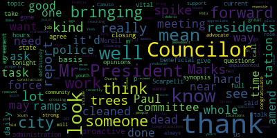
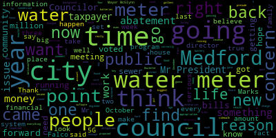

[Bears]: Sorry, we couldn't hear you, I'm present.
[Hurtubise]: Thank you. Councilor Falco. Present. Vice President Hines. Present. Councilor Marks. Present. Councilor Morell.
[Morell]: Present.
[Caraviello]: Present.
[Hurtubise]: President Caraviello.
[Caraviello]: Present, 70 affirmative. Pursuing the Governor Baker's March 12th, 2020 order, suspending certain provisions of the open meeting law, chapter 38, section 18, and the Governor's March 15th, 2020 order, imposing strict limitations on the number of people that may gather in place. This meeting of the Medford City Council will be conducted via remote participation to the greatest extent possible. Specific information and general guidelines for remote participation by members of the public and or parties with the right of requirement to attend this meeting can be found on the City of Medford website at www.medford.org. For this meeting, members of the public who wish to listen or watch the meeting may do so by accessing the meeting link contained here and no in-person attendance of members of the public will be permitted, but every effort will be made to ensure that the public can adequately access the proceedings in real time via technological means. In the event we were able to do so despite best efforts, we will post on the city of Medford or Medford community's website, an audio or video recording transcript or other comprehensive record of the proceedings as soon as possible after the meeting. Okay. Please rise and salute the flag.
[Scarpelli]: I pledge allegiance to the flag of the United States of America, and to the republic for which it stands, one nation, under God, indivisible, with liberty and justice for all. Mr. President. Councilor Scarpelli. I move to suspend the rules to take paper two, I believe, two, one, three, four, zero.
[Caraviello]: On the motion by Councilor Scarpelli, seconded by Vice President Knight, Mr. Clerk, please call the roll for suspension of the rules and take paper 2134-0 out of order.
[Hurtubise]: Councilor Bears? Yes. Councilor Falco? Yes. Vice President Knight? Yes. Councilor Martins? Yes. Councilor Morell? Yes. Councilor Scarpelli.
[Caraviello]: Yes. President Caraviello. Yes. I'm in favor of the motion passes. 21340 petition for a common fixture license by mark before 280 Merrimack street, Methuen Mass 01844 for greater Boston Donuts LLC, 283 Mystic Avenue Medford 02155. The chairman for licensing Councilor Scarpelli.
[Scarpelli]: Thank you, Mr. President. Is Mr. Kafour present this evening?
[Caraviello]: I see someone there. Mr. Clerk, I see Duncan Donovan. Can you unmute them? Good evening, ma'am. Hi.
[GswFX5Excbs_SPEAKER_11]: Name and address of the record, please. Emily Fitzgerald, 280 Merrimack Street, Missouwan, Mass.
[Caraviello]: We can't hear you. Hold on a second. You're still muted. I'm not muted. OK. Can you try again?
[GswFX5Excbs_SPEAKER_11]: Hi. Emily Fitzgerald, 280 Merrimack Street, Missouwan, Mass.
[Caraviello]: OK. You're still on mute. Can you unmute yourself?
[Morell]: Mr. President, can you hear me?
[Caraviello]: No, we can't hear you anymore, Councilor Morell.
[Morell]: Something strange is going on, audio wise.
[Marks]: There's something going on.
[Caraviello]: I don't think anybody can hear. Pat, do you have any issues over there? If we can hold on one second, we have a technical snafu here. Okay. All right, let's try again. Name and address for the record, please.
[GswFX5Excbs_SPEAKER_11]: Emily Fitzgerald.
[Caraviello]: Good evening. And your address, please.
[GswFX5Excbs_SPEAKER_11]: 280 Merrimack Street, Methuen, Mass.
[Caraviello]: Okay, and you're here representing Dunkin' Donuts, correct?
[GswFX5Excbs_SPEAKER_11]: Correct.
[Caraviello]: Councilor Scarpelli.
[Scarpelli]: Thank you, Mr. President. I see everything is in order. The question I have is hours of operations. Can Ms. Fischel just review that with us?
[SPEAKER_11]: Yes, the business opens at 4 a.m. and closes at nine. However, the employees go in at 3.30 to prepare the shop.
[Scarpelli]: That's not the practice at the other Dunkin' Donuts, if I'm correct. We've passed a few of these. recently and 3.30 seems very early for our neighborhoods.
[Caraviello]: I think five o'clock is the normal opening time.
[Scarpelli]: Right, that's why I'm a little.
[Caraviello]: Yeah, you need a special. Okay. To open at four. You can open at five right now, but if you wanna open at four, you'd have to come back for a special permit.
[SPEAKER_11]: Okay, so we can open at five o'clock.
[Caraviello]: 7 to 11.
[Scarpelli]: 7 to 11 is the normal business hours and anything other than that requires a special permit. So what was with the previous owner is eliminated as we move forward with our takeovers now. So, Mr. President, other than the hours and making that a restriction for the record, I see everything else is in order, move approval.
[Caraviello]: Thank you. On the motion by Councilor Scarpelli, seconded by? Second, Mr. President. and then they can come back for a special permit. Yes. And seconded by Vice President Knight.
[Falco]: If I may, so the current closing time is 9 p.m., is that what she said?
[Caraviello]: Councilor Falco. I think she said the current closing time you said was 9 p.m.? Correct. Yes. Okay, thank you. So on the motion by Councilor Scarpelli as amended, seconded by Vice President Knight. Mr. Clerk, please call the roll.
[Hurtubise]: Councilor Bears. Yes. Councilor Falco. Yes. Vice President Knight. Yes. Councilor Marks.
[Scarpelli]: Yes.
[Hurtubise]: Councilor Morell. Yes. Councilor Scapelli. Yes. President Caraviello.
[Caraviello]: Yes. Motion passes. Motion to revert back to regular business. On the motion by Councilor Scarpelli, seconded by Vice President Knight. Mr. Clerk, please call the roll.
[Hurtubise]: Councilor Behr. Yes. Councilor Falco. Yes. Vice President Knight. Yes. Councilor Marks. Councilor Morell. Yes. Councilor Pele. Yes. Councilor Caraviello. Yes. 17 affirmative.
[Caraviello]: Motion passes. 21-330 offered by Councilor Morell, being so resolved that the city council receive an update on the parking policy and enforcement report to the mayor from commission co-chairs Laura Loma and Jim Silva. Councilor Morell.
[Morell]: Thank you, Mr. President. Yeah, Laurel and Jim are on the call right now, so I'll pass it to them in one moment. But they are the co-chairs of this commission. Many of the members are on the call right now as well, who put in an incredible amount of work that they also catalog. I know it's been more than this, but at least 62 hours of meetings, you know, a number of representatives from different community members, representatives of business owners. And the report was delivered to the mayor about a month ago. And then I shared it with the council a week ago. It was made public later in the week. a lot of recommendations for how to move forward and parking policy and enforcement in the city based off of a number of specific charges from the mayor. So I'll hand it off to Laurel and Jim to provide a kind of overview and update on that.
[Scarpelli]: Okay, Mr. Mayor, I mean, Mr. President, Councilor Scarpelli, if I can, I really appreciate the hard work this committee has done, and I appreciate Councilor Morell sending us the the report, but I think it would truly do this committee an injustice that if we just hold it to a, just a review and just talking about it in a council session, I would feel really comfortable and do a quick synopsis maybe, but I would really call, you know, make the motion that we call for a committee, the whole meeting with the whole committee and the council, because there are a number of questions I have, And it was only done because of the hard work to this commission that brought up some great concerns and great issues. So, and in resolution. So, like I said, I appreciate them being here tonight. I'd love to hear a brief synopsis. And if that, if my colleagues agree with me, I think this really needs a whole committee, the whole meeting that we could really spend a whole evening on this, really breaking this down because it is important. It's probably like I said, other than the streets and sidewalks, probably the next biggest question we get on the council from constituents is traffic and parking questions. So I make that into a form of motion.
[Knight]: Thank you. Mr. President, I certainly would support that motion. The paper that was provided to us was an 80 page document. And I think it would be uh, most appropriate if we had an opportunity to review it and then we could ask him phone questions that it could be able to answer. I don't think that's a bad idea. Um, in preparation for a committee of the whole, that's the direction of this council. So chooses to move. Um, I also think it would be proper that we get a copies of all the documents that are related to all the public documents that are related to the meetings that took up, you know, the copies of the minutes, the meeting minutes, so that we can kind of, uh, put into context what the report says. And, uh, we can look at that chronological history of, uh, how we got to this 80 page document. So I think that's very important. Um, Mr. President asked that that be provided by the membership at the committee of the whole meeting as well. Thank you, Mr. Vice President. Councilor Morell, then I'll offer the second to the motion as well. Okay.
[Morell]: Thank you, Mr. President. Yeah, I fully support Councilor Scarpelli's motion. In discussions with Jim and Laurel, we had that same conversation about, you know, the idea that this would probably be great for Committee of the Whole. So really just introducing this tonight, and I fully agree that there's a lot of conversation and questions that can be asked about this. So just getting the ball rolling, and I agree with Councilor Scarpelli that we should have a Committee of the Whole on this.
[Caraviello]: We wanna hear from a brief synopsis on the- They're here, I would not disrespect- Jim Silva.
[Marks]: Mr. President. Councilor Marks. Thank you, Mr. President. I agree with both my colleagues, Councilor Scarpelli and Councilor Knight. I think this warrants a far more in-depth detailed meeting, which would be precisely a committee of the whole. So I agree with that assumption. The question I did have, Mr. President, And it's great to have the full membership of the Traffic Advisory Commission. However, that was the first step in this process. And I think it would be equally as helpful to also have someone from the administration present, because the next phase of this, to my understanding, is rollout, implementation, and so forth. And that's a vital component. This was fact gathering and making recommendations. I believe there were 21 really worthy recommendations made, but there's also two other steps in the process. And I wanna make sure that this doesn't just end up in step one, that we see this to fruition, step two and three. So I would ask that the committee of whole also includes representatives from the city administration that can speak on this, Mr. President.
[Caraviello]: Thank you. Thank you.
[Falco]: Thank you, Mr. President. I want to thank Councilor Morell for bringing this forward and also state that I am in full agreement with Councilor Scarpelli as well. And I thank the task force for being on the call tonight. I think it'd be good to get a synopsis of the work that they've done. And I thank them for the work that they've done. I know a lot of hours and hard work has gone into this, but I do think it'd be very beneficial to have a committee of the whole meeting just so we can look at just this topic and really, you know, take a look at this report and ask all the questions that we need to ask. And I agree with Councilor Marks as well. I think it's vital that someone from the administration is there to, you know, to give us their opinions on the report and to talk about, you know, how this can be implemented if that's the way we go. but I look forward to that and I am definitely in support of the Committee of the Whole meeting. And I wanna, once again, thank the task force for all their hard work. Thank you.
[Caraviello]: Thank you. Jim or Laura, do you wanna give a brief synopsis or you wanna wait for the Committee of the Whole meeting?
[Ruma]: That's fine. My name is Laurel Ruma. I live at 149 Burgett Avenue. The context for this commission is probably quite important for folks who may be hearing about this for the first time. which is when the mayor came in, one of her, to office, one of her primary goals was to figure out Park Medford and how to improve parking in the city. Unfortunately, then the pandemic hit and in October of 2020, this commission was assembled. So it is a group of folks from around the city, business owners and residents. We have a contract lawyer, a writer, data scientist, all sorts of folks who've lived here for a long time and who've just moved here. And the hope was to start the process, start the process, which is going to be a very long process, of collecting as much data as possible. So I'm sorry you haven't had a chance to read this thrilling 60-page report, because it is. It's a fascinating deep dive into why parking is so difficult, specifically in Medford. The issues that we highlight in the 21 recommendations are not the only 21 recommendations. There are recommendations throughout the entire report I please ask everyone just give a read through and come to the committee of the whole meeting ready with lots of questions. The charge from the mayor was to emphasize looking at the South Medford and Hillside neighborhoods. Jim and I have been the representatives for the city, for the MBTA's construction working group since 2018. We've been appointed by two mayors now, And I've been working on this project since 2008. So the Green Line extension is real. It's coming to Medford and actually will be open in January of this year. So unfortunately, the pandemic delayed us quite a bit, but the hope was that we would always start looking at parking specifically for these two neighborhoods where the stations are situated. The complexity of parking is that there is, um, It's a give and take process. And this is what we really want folks to understand. We recommended zoned parking for across the city, but a trade off with zoned parking is to have more flexibility with better permits. For example, home health care aids, being able to call the city 24 hours before your kid has a birthday party, things like this that will actually make the parking program much more humane. Another issue that my neighbors have thankfully asked me about, we've gotten quite a bit of feedback, so I really appreciate all that feedback as well, has been the issue of allowing Tufts students who are enrolled at Tufts University, as well as on the lease of the apartment, making them residents of the city, able to get some kind of resident parking pass. Again, this is something that we have to talk about. If we decide not to do it as a city, that's fine, but this is one of those major issues that not only do neighbors have on the street, but landlords as well. You'll also notice that the report takes a look at zoning changes that the state has made very recently, like last month, which allow less restrictive zoning around transit stations, that means Ball Square in Medford, which is the Medford station is in Ball Square, and Tufts Medford station, which is College and Boston Avenue, obviously also Medford, and West Medford. That radius is half a mile. So if you're standing on the corner of Boston and College Avenue, you're talking about more permissive zoning all the way down Bob's to Bob's on Main Street to the entire length of Main Street to Broadway. So these are big challenges for our city, and this is why parking is so integral to everything else that we're trying to think about as a city as we roll out our master plan. Also, you'll notice that the state has, as well as the federal government, a very aggressive goal by 2030 and then by 2050 to reduce carbon emissions. That means a lot more electric vehicles on the road. This is an opportunity for the city to invest in electric vehicle charging stations, I am positive we can get some really good grant funding as we start to think about where we'd like to see electric vehicles parking be situated in neighborhoods and at businesses. Again, we tried to boil the ocean here, but we have just a short report of what we could possibly talk about, and the reason Jim and I are so absolutely obsessed with this is that we live in these neighborhoods of South Medford and Hillside. We've been involved in this green line change for a very long time, and we know the impact it's going to have in the neighborhood. And it's not being hyperbolic to say it will absolutely change this city. And so we need the city to help South Medford and Hillside to become that great place that people want to come and take the green line to and from. The other important thing that everyone should understand is that the MBTA considers walking distance from train stations to be a one mile radius. So that encompasses Boston Avenue, all the way down to South Street, all the way over to Route 16, and then obviously way into South Medford. So it affects literally the entire half of the city that is on the west side of the river.
[Caraviello]: That's why we need the whole committee of a whole, because you bring up so many points that it would be just impossible to cover it in this meeting. So again, I say, in two minutes, you brought up 10 great points that all need to be said. I will give you a date for the committee to hold by the end of the week. I'll get it to both you and Jim, and you can pass it on to your committee. And probably within the next, two weeks, so I'll check the calendar to see what the next Wednesday we have available. Does the Wednesday work for your committee? Because I think we would need a full two hours and I don't want to be pushing us against the clock on a council meeting. So I think a Wednesday night would be the best way to do it. That work for you guys? All right, thank you. On the motion by Councilor Scarpelli.
[Bears]: Mr. President. I would just ask if possible that you consider including a resolution that I put forward last year 20-534. It was about a ball square district plan. It seems like this might align with this in some way. So just putting that on your radar is something we may want to talk about at a future meeting as well. I don't know if it would be this specific meeting or a follow-up meeting. Thank you, Councilman Betz.
[Caraviello]: Okay, on the motion by Councilor Scarpelli, seconded by Vice President Knight, as amended by Councilor Marks to have someone from the administration present, and as amended by Councilor Knight to have the documents that went along with the meeting also. Did I forget anything? Okay, Mr. Clerk, please call the roll.
[Hurtubise]: Councilor Bears. Yes. Councilor Falco? Yes. Vice President Knight? Yes. Councilor Marks? Yes. Councilor Morell? Yes. Councilor Scarpelli? Yes. President Caraviello?
[Caraviello]: Yes, I move the affirmative motion passes. 2-1-3-3-1 offered by Councilor Bears, be it resolved by the Medford City Council that the city administration post all Medford Traffic Commission rules and regulations to the city website in an easy, accessible, and searchable format. Councilor Bears.
[Bears]: Thank you, Mr. President. This is pretty self-explanatory. I have had residents reach out constantly asking me what the rules are, what are specific situations around parking enforcement. And they were, you know, unable to find the traffic commission's rules and regulations posted online. I think it's important that that be accessible through the city website. So residents aren't, you know, unable to find that information when they need it.
[Caraviello]: Okay. On the motion by Councilor Bears, seconded by Councilor Scott Perry. Mr. Clerk, please call the roll.
[Hurtubise]: Councilor Bears. Yes. Councilor Falco. Yes. Vice President Knight. Yes. Councilor Marks. Yes. Councilor Morell.
[Morell]: Yes.
[Hurtubise]: Councilor Scarpelli. Yes. President Caraviello.
[Caraviello]: Yes, 70 affirmative motion passes.
[SPEAKER_02]: We have the consolidated papers 21332, 21333, 21334.
[Caraviello]: On the motion by Vice President Knight, seconded by Councilor Scarpelli, that we combine the three papers where they seem to be all identical. Mr. Clerk, please call the roll.
[Hurtubise]: Yes. Yes. Yes. Yes. Yes. Yes. Yes. Yes. Yes. Yes. Yes. Yes.
[Caraviello]: Yes. Yes. Yes. Yes. Yes. Yes. Yes.
[Hurtubise]: Yes. Yes. Yes. Yes. Yes. Yes. Yes. Yes. Yes. Yes. Yes.
[Caraviello]: Mr. President, for the record, I did receive a letter from Nate Stackhouse this afternoon. I'll be happy to read it to the record, Mr. President.
[Knight]: Okay. Councilor, I'd want to read it to the record. Mr. President, yes. Correspondence from Nathan Stackhouse, General Manager of Park Medford. Good evening, ladies and gentlemen. Please see Republic Parking's response to the Park Mobile data breach below. Republic has learned that Park Mobile recently reported a data incident related to Park Mobile's mobile payment app. This was not a Republic data incident. Nonetheless, Republic has contacted ParkMobile for information. Republic has learned that ParkMobile is in the process of directly contacting those users who would like to use the ParkMobile app, and Republic has received a copy of that ParkMobile email to users, a copy of which is included below. Republic will continue to monitor developments related to ParkMobile's incident and will update the city as we learn additional and relevant information. The email is as follows, important security update, In March, Mark Mobile became aware of a cybersecurity incident linked to a vulnerability in a third-party software that we use. In response, we immediately launched an investigation with the assistance of a leading cybersecurity firm to address the incident. We quickly eliminated the third-party vulnerability, and we continue to maintain our security and monitor our systems. Out of an abundance of caution, we also notified the appropriate law enforcement authorities. We recently concluded our investigation, and are now updating our uses of the findings. Below are the key points. One, the investigation confirmed that no credit card information was accessed. Two, no data related to a user's parking transaction history was accessed. Three, only basic user information was accessed. This includes license plate numbers, as well as email addresses, phone numbers, and vehicle nicknames, if provided by the user. In a small percentage of cases, mailing addresses were also affected. Encrypted passwords were accessed, not the encryption keys required to read them. We protect user passwords by encrypting them with advanced hashing consulting technologies. We do not collect social security numbers, driver's license numbers, or dates of birth. We take extensive measures to protect our user passwords. However, as an added precaution, users can change their password in the settings section of the ParkMobile app or on the web by clicking this link. We recommend always using unique passwords for different online accounts. As the largest parking application in the United States, the trust of our users is our top priority. Please rest assured we take our responsible seriously and safeguard the security of our users' information. Thank you. That's from the third party vendor, Mr. President. Thank you, Mr. Vice President.
[Caraviello]: Councilor Bass.
[Bears]: Thank you, Mr. President. I filed a very similar resolution to you, Mr. President, and to Vice President Knight. I appreciate the note from Republic Parking. I think the only element It wasn't clear to me if residents who use Park Mobile would be notified of the data breach through Republic Parking. So that would be one item that I would like to see addressed by Park Medford.
[Caraviello]: You want the users identified?
[Bears]: I want the users to be notified that there was a data breach. They may have been notified by Park Mobile, but I think it would be helpful if Park Medford would notify them. Do you want to make that a form of amendment? Sure, it's in my resolution. So if they're consolidated, I think it's already included.
[Caraviello]: Okay. All right. Anybody else want to speak on this?
[Morell]: Mr. President?
[Caraviello]: Councilor Morocco.
[Morell]: Thank you, Mr. President. I'm just going off, and this might be Councilor Bears' question as well, just going off the letter that Vice President Knight just read. So users of the Park Medford were or were not impacted, because I know now we're talking about Park Mobile, Republic Parking in Park Medford, and I'm having a hard time following whether or not people who park in Medford were actually impacted by this data breach.
[Knight]: Vice President Knighton. I believe Republic Parking is the parking enforcement agent that is acting as Park Medford. It uses ParkMobile as the application to allow individuals to purchase parking electronically. And the data breach affected that third party vendor, who is the largest in the United States of America. So it seems to me like Metro residents have been impacted because they have been notified.
[Morell]: Okay, thank you, sir. I misheard with all the different park this, park that, thank you.
[Caraviello]: Okay, any further discussion on this? Okay, the motion by Vice President Nayeed is seconded by Councilor Bears as amended by Councilor Bears that Park Medford notify the users of Medford. Is that correct, Councilor Bears?
[Bears]: Correct.
[Caraviello]: Okay. Yes, he does want that. Councilor Bears, do you want that in there as an amendment?
[Bears]: Yeah, that's fine, yes.
[Caraviello]: Mr. Clerk, please call the roll.
[Hurtubise]: also bears. Yes. Yes, vice president night. Council marks. Yes. Yes. Yes. Yes. Yes. Yes.
[Caraviello]: Motion passes to 1335 offered by Vice President night. Being so resolved that the Medford City Council request that the parks commission reopen the application process for the installation and additional memorial bricks at the Tufts Park Gone Too Soon Memorial and be it further resolved that the Medford City Council requests that the park commission investigate the eligibility of CPA funds to cover the expenses.
[Knight]: Vice President Knight. Mr. President, thank you very much. One of the best kept mysteries in the city of Medford is how to get a brick down at Tufts Park at the Gone Too Soon Memorial. This issue has been brought to my attention a number of times. I've tried to reach out to individuals that are associated with the project. And that's, it's really been a non fruitful search. However, I think that this going to some soon Memorial in Tufts Park is something that needs a little bit of love and attention, Mr. President needs a little bit more involvement from our city and our parks commission. And I think the application process also needs to be opened up. Since the last time applications were accepted, we've lost a number of individuals in this community factor. I don't think anybody will ever agree that somebody's gone on time. Everybody's gone too soon. And self-benefit is a great neighborhood filled with a lot of people that have pride from the area that they come from. And I've heard a number of individuals that are seeking applications for this purpose. So I'm asking that the Parks Commission reopen the application process and maybe this summer we can install some bricks down at Tufts Park. Also, Mr. President, because we have the Community Preservation Act, I thought that this might be an opportunity to see if we are eligible to receive CPA funding for this project to offset the cost for the families that are seeking to put bricks in. So with that being said, I asked my council colleagues to support the resolution.
[Caraviello]: Thank you, Mr. Vice President. Again, I want to thank you for bringing this forward. I myself have received many calls from people asking how to purchase bricks, and I didn't know how to get in touch with anybody. And again, this is one of those little secret down there. I've got several friends that are part of that memorial down there. And again, thank you for doing this for me. So on the motion by Vice President Knight, seconded by, seconded by Councilor Scarpelli. Mr. Clerk, please call the roll.
[Hurtubise]: Councilor Bears? Yes. Councilor Falco? Vice President Knight? Yes. Councilor Marks?
[Unidentified]: Yes.
[Hurtubise]: Councilor Morell? Yes. Councilor Scarpelli? Yes. President Caraviello?
[Caraviello]: Yes. Seven in favor of the motion passes. 2-1-3-3-6 offered by Councilor Marks. Be it resolved that trash collection citywide be discussed. Councilor Marks.
[Marks]: Thank you, Mr. President. Over the last several weeks, I received a number of phone calls and emails from area residents concerned about our waste collection. And the fact that for many residents of this community that have to deal with residents that putting their barrels out too early, and it's creating not only debris, Mr. President, on these windy nights, as we all know, it's also creating an increase in rodents throughout the community. And I'm getting complaint after complaint in many of our neighborhoods about an increase in rats. And we were told on many occasions, if you give them a water source and a food source, rats will come. And indeed, putting the barrels out too early is an additional food source. So I asked Mr. President not to be punitive and ask that the city find residents, but to notify residents that there is an ordinance, Mr. President. And the reason why I bring it up is You never hear much discussion regarding the ordinance itself, but it does exist. And I happen to have done a little research and asked our police department, code enforcement and border health, how many tickets were issued over the past year for a violation of section 70-4, which is the placement of receptacles, which are trash bins. And I was told, Mr. President, that there were 55 tickets written in the past year, not all for putting out trash too early, for putting out So for other items that are against the ordinance that are left overnight, Mr. President. So it's clear to me that we've probably issued a dozen or two tickets for putting out trash too early in this community. And I would just like to read the solid waste ordinance so people are aware, Mr. President. I don't think people are malicious. I know I'm always trying to get my trash out ahead of time to make sure it's out on the the street, Mr. President, but I think once people are aware what the rules and regulations are, they will comply, Mr. President. And it's not just compliance for the sake of compliance, it's for the sake of not having trash blown all over the street. not having rodent problems and so forth. So section 70-4 of the solid waste article states, article one states, placement of receptacles. All receptacles containing ashes or rubbish, I think that shows you how old this ordinance is, shall be placed on the outer edge of the sidewalk. It shall be placed in such a manner so that the free flow of travel on the sidewalk is not obstructed nearby. No such receptacles containing ashes or rubbish shall be placed on the sidewalk earlier than 7 p.m. of the day immediately preceding the day appointed by the city for the collection of the receptacles. So if your trash is on a Tuesday, Mr. President, you can't put your barrel out before 7 p.m. on the Monday night. So if you put it out at three, four, five, six in the evening, you're in violation of the ordinance. It has to go out after seven, Mr. President. And I think once residents are aware of that, they will respect the ordinance, Mr. President, And I would ask that even if the reverse 911 call went out on this, just to notify residents, Mr. President, because it is becoming an issue. I was going up on Riverside Ave the other day, and as we all know, it's been windy the last few days. Literally trash, it looked like a tape parade. Trash was blown everywhere, the tops were off the barrels, and really it was a mess and a hop. Mr. President, and that's not what we want to give the impression of our community. Also, Mr. President, section 70-6, collection for businesses enforcement, all business establishments, rubbish shall be placed on the sidewalk for collection no earlier than 9 a.m. on the day appointed by the city for collection of rubbish. And I know some businesses have put their trash out the night before because they may not get in to put the trash out the day of it after nine. And that is also a concern, Mr. President. And I would just ask if the Chamber of Commerce can let their membership know that, indeed, there is an ordinance that covers that. And it also states, Mr. President, which someday may require an update from this council, it shall be the duty of the police officers to enforce the provisions of this section. And from what I'm being told by the building commissioner, Paul Mulkey, who I spoke to today, It's typically the Board of Health and court enforcement, our court enforcement officers that are issuing the tickets, not the police department. So I would ask that subsection B of section 70-6 be updated by this council, probably the public works subcommittee to include language that would include enforceable by DPW, I'm sorry, by the building department and by the Board of Health. So that's pretty much it, Mr. President. In the interest of just getting the word out, I would ask that the city administration offer an amendment. The city administration do just an informational 911 alerting residents of the both business and homeowners of the trash ordinance and when trash receptacles are allowed to be put out on the sidewalk for pickup, Mr. President. Thank you.
[Caraviello]: Any discussion on Councilor Marksley? Councilor Marksley, I want to commend you for bringing this up. 70-6 has been a long, long theme of mine when I go through the business districts, especially on some businesses that close on a Friday and don't open up again for the weekend, put them out on a Friday afternoon. And I've had discussion with the past mayors about this, I can't understand why waste management, which is a 24-hour company, can't come by at 11 o'clock at night or 12 o'clock at night and pick up the couple of business dishes that we have. They put their rubbish on so they don't have to do it during the day. And it doesn't sit out there sometimes all weekend, especially some of the food establishments that put their rubbish on and sit there for a bit. So again, I thank you for bringing this forward.
[Marks]: Thank you, Mr. President. Just if I could, Mr. President, I realize that we signed a long-term contract. Actually, the administration signed a long-term contract with waste management. But in my opinion, over the years, this council has offered a number of resolutions requesting different solutions to some of the constituent calls that we're getting, Mr. President, to no avail. And it seems like either the city administration, and I'm not saying this administration, but past administrations are not willing to sit down because of a long-term contract and talk to waste management You know, during COVID, it hasn't been much of an issue, but I can tell you firsthand that waste management picks up trash between seven and nine o'clock on the major thoroughfares when people are rushing to work. And I can tell you, it makes traffic go back 20 minutes, Mr. President. On any high street, Riverside Ave, Salem, you mentioned on many of the major thoroughfares, that was one request they offered over the years, that they stay off the thoroughfares between certain hours, and that would be seven or nine in the morning, and, you know, four to six in the evening, when we know there's a high impact of traffic to our community. And for whatever reason, that always falls on deaf ears. And I think would alleviate some of the concerns when we talk about congestion in our community. So I want to thank you for your recommendations as well.
[Caraviello]: Thank you. Okay, on the motion by Councilor Marks, seconded by Councilor Falco. Oh, excuse me, Councilor Villescaz at the end.
[Bears]: Thank you, Mr. President. As the chair of public works, I'd be happy to work through this. Were you just suggesting, Councilor Marks, looking at 70-6 subsection B, or do you want to look at the whole section?
[Marks]: You know, looking at the whole section, it probably would require an update. This language is probably 60, 70 years old. So I wouldn't say we look at the entire section.
[Bears]: Okay, I will work to schedule a meeting. Is that an amendment that we're sending this to public works or?
[Caraviello]: And especially the 70 districts for the business district. There's no reason why those can't get picked up at 10 o'clock at night, like other cities do.
[Knight]: May I be so bold to suggest Mr. President that we send the paper to the administration and have them mark it up for us to reflect what existing practices and then we can build upon that document as opposed to us trying to go through that 60 year old piece of paper and figure out what it is.
[Caraviello]: So we can do that. I'm amenable to that. I'm not opposed to that. Okay. Mr. Clerk to get that amendment from councilor.
[Marks]: Yes. We just have to send it with our request because we can't just send a paper to them. So I think we have to also include what we're trying to accomplish.
[Knight]: Yeah. Existing ordinance to reflect for the current ordinance to reflect existing practice.
[Marks]: Yeah, we'll probably end up going to subcommittee anyways, but yeah. Yeah.
[Caraviello]: On the motion by Councilor Marks, as amended by Council Vice President seconded by Councilor Mayne. As amended by Councilor Marks. Mr. Clerk, please call the roll.
[Hurtubise]: Councilor Bears. Yes.
[Marks]: Yes, good. Mr. President, if we could also let the record reflect. Also, there's a service that's provided by waste management. And I've asked this a million times. where they will come around and clean the barrels, Mr. President. And it's a great service. I've asked a number of times that they provide, I think they subcontract, to go around. We've had these barrels for years. Many of them are big and cumbersome to work with, and it would be a great asset to have them come around and clean the barrels out, Mr. President.
[Caraviello]: Oh, I was unaware of it. Yes. Oh, thank you for bringing that up. Thank you. As further amended by Council locks. Mr. Clark, please call the roll.
[Hurtubise]: Councilor Bears. Yes. Council Falco. Vice President night. Also marks. Yes. That's a morale. Yes. That's a scruplet. Yes. President Caraviello.
[Caraviello]: Yes, I mean affirmative motion passes to 1337 offered by Vice President night being so resolved. that the Medford City Council extend its deep and sincere congratulations to Pauli Camuso on his recent election as president of Method Youth Hockey. Vice President Knight.
[Knight]: Mr. President, first and foremost, I'd like to congratulate Senator Russo on her service as the former president, the outgoing president. She did a great job over the last several years. But recently, Mr. Pauli Camuso was elected as president of the Method Youth Hockey Association. Mr. President, I was wondering what was going on with Paul and I kept seeing him show up at these meetings and the city council on TV every once in a while calling in and I didn't know if he was getting the bug again and he was gonna be seeking electoral office. But I guess he is seeking electoral office, a subtle electoral office, but it was at the local level on the board of directors for Medford Youth Hockey, where he spends a lot of his time with his son, James. So with that being said, Mr. President, it's great to see Paul continue to stay involved in the community after so many years serving on this council and in the school committee and I just wanted reach out and congratulate Paul for making another foray into elected politics and keeping his undefeated streak alive. Thank you.
[Scarpelli]: Thank you, Council. Vice President, I bring this forward. First, I, too, wanted to congratulate and thank Annetta Russo. For one person being involved in board representation on Little League, and basketball, and youth soccer. To take that position is a very stressful, tiresome, and daunting position. So, Annetta did a great job. I really want to thank her for holding everything up, Medford Youth Hockey, for her time as the president, and congratulate our own Paul Camuso. And I'm sure he's going to do wonderful things as the president If we know Paul, we'll see the Boston Bruins there soon playing against the Method Rock Midgets. So, thank you. Councilor Marks.
[Marks]: Thank you, Mr. President. I want to congratulate my former colleague, Councilor Camuso, on this prestigious appointment. Mr. President, little known fact that Paul Camuso used to skate for the Method High hockey team. And I'm supportive of this as long as he's not teaching our youth how to skate, because from what I recall, he wasn't a great skater, Mr. President. And as long as he's in the administrative end, I do support this, Mr. President.
[SPEAKER_04]: As a past president of the Methodist Hockey Association, Councilor Caraviello, do you have anything you want to add, maybe some advice for the wisdom team?
[Falco]: Thank you, Mr. President. I'd also like to congratulate Paul Camuso. He's always been a strong advocate for the youth in our community, and I know he will do a great job in this role. So congratulations to Paul on this new endeavor.
[Caraviello]: Thank you.
[Bears]: Mr. President. Councilor Bears. I just want to congratulate Paul, wish him good luck, and he's definitely a better skater than I am. So good luck.
[Caraviello]: Thank you. First, I wanna thank Mr. Russo for being the past president for many years. I myself, I'm a past president of Memphi Utahki, and I wanna thank Paul for taking the job. If you thought the politics of Medford City Council was bad, well, I think it's the politics of Medford Utahki. Again, being involved with that, that's a great organization. I've been involved with them probably at least 15 years of my life with my kids and my daughters, and son skated there. And I say, it's a great, it's a great thing. And it's good to have people step up because I say that it's a lot bigger job than people think. They've got, you know, hundreds of hundreds of kids that skate through there and boys and girls, you know, and they, they start out, see them coming through there when they're three and four years old, they learn how to skate. Excuse me. Again, I want to I want to take Paul take off the taking on the starting position. That was going backwards. The president learned to skate. Yeah. The motion by Vice President night seconded by Councilor Falco. Mr. Clinton.
[Hurtubise]: Councilor Bears. Yes. Council Falco. Vice President Knight? Yes. Councilor Marks? Yes. Councilor Morell? Yes. Councilor Scarpelli?
[Caraviello]: Yes. President Caraviello? Yes, I'm in the affirmative, motion passes. 2-1-3-3, an offer by President Caraviello. We resolve that the Medford City Council have the DOT immediately clean the section of roadway of debris between Route 16 and Route 93. I don't know if anybody has ever had the opportunity in the last couple of months to drive down past the Meadow Glen Mall Turn onto Route 16. When you look at the side of the road there, there's mattresses, there's trees, there's everything. And that whole section of roadway is really just a garbage pit. And I would hope that the DOT immediately gets over there, cleans it up, and say it's a real distraction of people that drive through our city. And it doesn't represent what our city looks like. Mr. Clerk.
[Hurtubise]: I didn't contact district board do today so they're, they're aware of their, their weather.
[Caraviello]: Thank you. So they get down to the Scott council resolution.
[Scarpelli]: Yes. Resolved. Take the motion for the DLT to me we clean section of roadways debris between 16 and 93.
[Bears]: If we could, if possible, amend the paper to add the on-ramp on Mystic Ave across from the inspection station. It's kind of a similar area. It's also very dirty. Yep.
[Caraviello]: Thank you. As amended by Councilor Bears.
[Marks]: Mr. President.
[Caraviello]: Councilor Marks.
[Marks]: I want to thank you, Mr. President, because I know you've been on top of these particular roadways, and in particular the underpass on Riverside Ave that had the lights out and so forth. And I know you've been a big advocate of that. I would ask Mr. President also that they take a look in general at all the state roads, Mr. President, within the city of Medford, in particular Wellington Circle and along the Felsway because of The number of businesses there, because of the number of cars that pass through that area, Mr. President, at any given time, if you take a walk through there, I think you'd be appalled on the amount of trash that is all over those. And really, DOT needs to step up and do it far more frequently than they do, Mr. President. You are correct. Thank you. So I have that as an amendment, Mr. President. Mr. President? Councilor Baca.
[Falco]: Thank you, Mr. President. I want to thank you for bringing this forward and thank Councilor Bears and Councilor Marks as well. If you wouldn't mind, could we also amend, just to be really specific, the crossing the police station, kind of like the on-ramps and off-ramps to Route 16 near the police station and near South Street? Yeah. I mean, there are trees, there's all kinds of debris there. and they did a lot of construction there, but there are trees there that look like they're like 20 or 30 years old that are just dead. And they need to be removed. I mean, a lot of people, when they come through the city, that's the only section of the city that they see. And they see that. And they should have been cleaned up a long time ago. So if we could amend that to include cleaning up those locations as well, I clearly appreciate it. Thank you.
[Caraviello]: Okay, on the motion as amended by Councilor Bears and amended by Councilor Marks,
[Knight]: As amended by Council Falco Council night, just one further amendment Mr. President, to make this the most amended paper in the history of the city council. I just like to ask that we request a copy of the maintenance schedule for the spring for the city of med on the DCR as well.
[Falco]: Mr. President, while I'm at it, if I can make one more amendment, the DCI property across from my St Francis Church. If that could be. Exactly, that can be cleaned as well that is dead trees all over the place. One of them fell down recently. I think it's been there for a few weeks. So if we can. Thank you get that.
[Caraviello]: As further amended by Councilor Knight and as amended again by Councilor Falco the content of the DCF. Anyone else? Okay. The motion by Councilor Scarpelli seconded by Vice President Knight Mr. Clerk let's call the roll.
[Hurtubise]: Yes. Councilor Falco. Yes. Vice President Knight. Yes. Councilor Marks. Yes. Councilor Morell. Yes. Councilor Scarpelli. Yes. President Caraviello.
[Caraviello]: Yes, seven deferred most passes. 21339 offered by President Caraviello, we've resolved the Medford City Council request that the owner of 28 Main Street remove the graffiti from the roof of the building and possibly some assistance from the city. If anyone has come down route 16 and taken the method off ramp, Someone has made it to the top of the building there on the corner right on the river and painted some graffiti on there. And again, it's no reflection on the owner. I know the owner is a good person, but where it is an historical building, maybe the historical commission can maybe step up and give the gentleman or the owner some assistance to remove the graffiti. If not, remove the referee at least to cover it up. I don't know if anyone has seen it as they get off the operator. The motion by Vice President Knight, second by Councilor Scarpelli. Mr. Clerk, please call the roll.
[Hurtubise]: Councilor Bears? Yes. Councilor Falco? Yes. Vice President Knight? Councilor Marks? Yes. Councilor Morell? Yes. Councilor Scarpelli? Yes. President Caraviello?
[Caraviello]: Yes, I move the motion passes. Communications from the Mayor. 21341 to the Honorable President and members of the Medford City Council. The members of the Medford City Council, I respectfully request and recommend that your Honorable body approve the following on the recommendation of the Community Preservation Committee. One, requesting the appropriation of $5,000 from the CPA General Reserve to the Unitarian Universal Church for restoration of an historic dog. This project will be tracked in the Community Preservation Fund by category, John, we said. Sincerely, Randall McGillicuddy, Mayor. What door is being fixed, Mr. President?
[Scarpelli]: The door- I believe they've already come to us. Yes, they have come to us in the past, but it's great. The historical door in front.
[Caraviello]: The historical door in front.
[Unidentified]: Oh, yeah, yeah, yeah.
[Caraviello]: On the motion by Councilor Scarpelli, seconded by Vice President Knight. Mr. Clerk, please call the roll.
[Hurtubise]: Councilor Bears. Yes. Councilor Falco. Yes. Vice President Knight. Yes. Councilor Marks. Yes. Councilor Morell. Yes. Councilor Scarpelli. Yes. President Caraviello.
[Caraviello]: Yes. I mean affirmative motion passes. Motion to take papers at the suspension. Motion by Vice President Knight, seconded by Councilor Scarpelli. Mr. Clerk, please call the roll.
[Hurtubise]: Councilor Bears. Yes. Councilor Falco, Vice President Knight, Councilor Marks. Yes. Councilor Morell. Yes. Councilor Scarpelli.
[Caraviello]: Yes.
[Hurtubise]: President Caraviello.
[Caraviello]: Yes, I'm in the affirmative motion passes. Under suspension, 21432 offered by Councilor Marks, be it resolved that a moment of silence be held for a lifelong Methodist resident, Robert Bob McGovern on his recent passing. Councilor Marks.
[Marks]: Thank you, Mr. President. It is with a heavy heart, Mr. President, that we just lost one of Method's finest, Bob McGovern, who we all knew affectionately in this community. You never saw or rarely saw Bob without his lovely wife, Ian. They were always together. They own the Superette which had the best soft-serve ice cream on Spring Street for many years. It was known as McGovern's Superette. They were truly a family-owned business, Mr. President. If you didn't have the money to pay for an item, they put you what was called the cuff. They put you on the cuff and they allowed residents, Mr. President, that may have been just squeaking by to gain access to a lot of supplies within their Super Red. And they were truly, truly just a real good family in this community. Bob loved spending time with family and friends. If you ever saw him, he was always the first to talk politics, but also asked you how your family was doing and how you were doing. And he really cared. He didn't just ask and didn't wait for an answer. He wanted to know how you were doing. and if there's anything he can help you out with. And that's the type of person Bob was. He grew up in the Wellington area, so I got to know him very well, Mr. President, and he will be sorely missed. I would ask, there were two people that passed recently, Mr. President, I would ask that this meeting be dedicated on behalf of Bob McGovern for his many years of service and dedicated volunteerism in our community and for being the type of person that I think everyone wants to emulate as a family man, a businessman, and someone who really cared about the community and not about the bottom line. And that is hard to find in this day and age, Mr. President. And on behalf of this council and his entire family, I want to wish them the utmost sympathy during this very trying time. Thank you, Mr. President.
[Caraviello]: Thank you, Mr. President. Councilor Scarpelli.
[Scarpelli]: Thank you, Mr. President. Thank you, Councilor Marshall and this board. I know that I've known the McGoverns, and again, here's another lifelong Medford resident and family in Medford who found a way to do their part to make Medford the community that it is today. They did that not only with the Super Red, I know that, believe it or not, I spent a few nights after baseball trying that soft serve, and the McGovern family has always been there for the community. I know they taught this community how to deal with loss, with the loss of their first child, and I know that good friends with Patrice, who's been a teacher of the Method Public Schools, and I know the love she had for her dad, and how much their family loved each other and love Medford. So my condolences to the family and he will be missed, that's for sure. Thank you.
[Caraviello]: Thank you. The motion by Councilor Baxton. Second by Vice President Bates. Councilor Baxton, do you want to do the other one?
[Marks]: We can do it together.
[Caraviello]: Mr. Clerk, please call the roll.
[Hurtubise]: Yes. Councilor Falco. Yes.
[SPEAKER_02]: Yes. Yes. Yes. Yes. Yes. Yes. Yes.
[Hurtubise]: Yes.
[SPEAKER_02]: Yes.
[Hurtubise]: Yes.
[Caraviello]: Yes. Yes. Yes. Yes. Yes. Yes. Yes. Yes. Yes. Yes. Yes. Yes. Yes. Yes. Yes. Yes. Yes. Yes. Yes. Yes. Yes. Yes. Yes. Yes. Yes. Yes. Yes. Yes. Yes. Yes. Yes. Yes. Yes. Yes. Yes. Yes. Yes. Yes. Yes. Yes. Yes. Yes. Yes. Yes. Yes. Yes. Yes. Yes. Yes. Yes. Yes. Yes. Yes. Yes. Yes. Yes. Yes. Yes. Yes. Yes. Yes. Yes. Yes.
[Marks]: Yes. Yes. Yes. Yes. Yes. Yes. Yes. Yes. Yes. Yes. Yes. Yes. Yes. Yes. Yes. Yes. Yes. Yes. Yes. Yes. Yes. Yes. Yes. Yes. Yes. Yes. Yes. Yes. Yes. Bob McGovern and Thomas Cangiano, a name synonymous with volunteerism in this community, Mr. President. He served on a number of boards and commissions with distinction over the years. We lost his lovely wife, Jane, back a few years ago, and they were inseparable as well. You always saw them, they're like frick and frack together. And Thomas was what, I would say is the model citizen. He was a guy that I had a lot of respect for, someone that shot from the hip and told you how it was, Mr. President, and was doing it in a caring way, and someone that really cared about his community. And I know he was a loving husband, father, grandfather, uncle, and every time you saw him, He looked like an imposing guy when you saw him, but he had a heart of gold, let me tell you. And again, a person when you bumped into, the first thing he would ask you is, how are you doing? And in this day and age, you don't hear that too often. Everyone's self-absorbed and looking at their own. And he was always a person that would ask how your family's doing, how are you doing? And is there any way he can help you? And he truly meant it. So I would ask Mr. President, for these two Method residents, that we also name this meeting, Mr. President, after Thomas Cangiano on his recent passing. So both Mr. Cangiano and Mr. McGovern, that this meeting be in their memories, Mr. President.
[Caraviello]: Thank you, Councilor Marks. Councilor Scapelli.
[Scarpelli]: Thank you again, Councilor Marks. Thank you, Mr. President. Tom Cangiano, I've known for a long time. I was fortunate to be friends with his daughter, Andrea, who graduated together from Medford High School, and then coached Michael, a prolific goal scorer with our Medford High School soccer program. And Mr. Cangiano was the perfect parent. Always had a kind word to say, things weren't going the right way, was always there to lend a hand. I remember a young man and his newlywed wife purchasing a home and Medford in going to Stonehenge Co-op, I believe, and sitting with Mr. Cangiano. And like Council Member Mox said, that opposing gentleman standing across from me was probably the best person you could have in your corner because he was also a father figure. I still remember the time when we presented the mortgage, he said, everything looked good. Then the homeowner went up to him and said, I was a mess. I was going to lose this house. He played it off like a true friend and father figure. And I believe he told me, George, your mortgage will go up 55 cents. And to me, I thought it was devastating, but he was such a good person and he knew how to put you at ease and really help you get started with your life. And that's one story. I remember Mr. Canjano and I'll never forget him for that. So thank you, Councilor Marksley for bringing this forward. And this is a terrible loss in our community. And I know he's in a great place right now. with the person he loves and that's his lovely wife. So thank you so much and our condolences to them.
[Caraviello]: All in motion by Councilor Mark, seconded by Councilor Scarpelli. Mr. Clerk, please call the roll.
[Hurtubise]: Councilor Bears. Yes. Councilor Tocco. Yes. Vice President Knight. Yes. Yes. Yes.
[Caraviello]: reports of committees to 120 2020 community community block grant funds that we need to this evening, and which was voted on on the motion by Vice President night second by Councilor Scott. Mr. Clerk, please call the roll.
[Hurtubise]: Councilor Bears. Yes. Councilor Lococo. Yes. Vice President Knight. Yes. Councilor Marks. Yes. Councilor Morell. Yes. Councilor Scarpelli. Yes.
[Caraviello]: President Caraviello. Yes, 7-1-1 votes passes. 2-1-0-1-8, April 21, Committee of the Whole report. This was a Committee of the Whole regarding certain cap positions and consolidations. And this meeting has been continued to Thursday evening. On the motion by Vice President Knight, seconded by. Second. By Councilor Scarpelli. Mr. Clerk, please call the roll.
[Knight]: Is it tabled for next week or tabled for next week? It's tabled for next week. Who seconded it, sir? By Councilor Scarpelli. Thank you.
[Hurtubise]: Councilor Bears. Yes. Councilor Falco. Yes. Vice President Knight. Councilor Marks. Yes. Councilor Morell. Yes. Councilor Scarpelli, President Caraviello.
[Caraviello]: Yes, Senator Caraviello, the motion passes. Public participation. Former Councilor Robert M. Penta, Zero Summit Road, Method Mass. Former Councilor Penta is requesting that a discussion about the city's water meter program be discussed, and also that a correction be made to a comment that I personally made during the 5G program. Mr. Penta, name and address of the record, please.
[Penta]: Good evening. Robert Penta, Zero Summit Road. I'm a member of the Society of Sprite. I want to go back to the December of 2002. And at that point in time, there was a gentleman by the name of Donald Ouellette, who became the city engineer here in the city of Medford. And one of the reasons why he became the new city engineer is because he came from the community of Air Mass, where he instituted a new water metering program. At the time, Paul Guia was our director of public works. And in December of 2002, Mr. Roulette came on board. In January 20th of 2003, Councilor Marks and myself at the time were interviewed by the local newspaper for the purposes of the concerns that were out in the neighborhood regarding the water meter and the bills that were going on. And at that point in time, information came forward that for the past three years, prior to 2003, there were over 709 abatements that were issued by the city of Medford because of faulty water meters. Mr. Roulette, when he came in, indicated that the city of Medford's water meters at that time were no more, they should be no more than 10 years of age. They were 17 years old at the time. So that began the crusade, so to speak, of figuring out how are we going to change these water meters? Should we change these water meters? And when are we going to do it? At the time, there was over 15,000 households that had water meters that needed to be changed, as well as 150 large capacity commercial district people, which represented 50% of the water consumption and the use at that time. Now, in August of 2003, the concerns kept multiplying on the council from residents complaining about their tax bills. And October 23rd, in a very rare moment by former Mayor McGlynn, he acknowledged at a public meeting that it was his fault that the meters were not changed. And the reason is the concern wasn't as bad as it was. And he told the Water and Soil Commission at that point in time that blame me, that was his quote, blame me because they just didn't want to get into the financial obligation of getting into the water meters, not realizing how serious everything was. And that's okay. because that got itself corrected after that. Then on February 17 of 2004, Mayor McGlynn presented before the city council a prelude, a prelude so to speak as to what the water meter sewer count should look like and what do we need to do here to go in the city of Medford. But what he did and what he proposed, which was kind of interesting, he proposed to finance $18,000 have the city council vote for $18,000 to do a preliminary review on X amount of homes and X amount of businesses in the city, just to see how bad these water meters were in commercial meters. And what they found out was an atrocious, the decision or the results were atrocious, because what came out of all of that, where these meters were running much slower, and as a result of them running much slower, the city was losing a tremendous amount of revenue. So in October of 2004, straight down October 19th, the city council voted the appropriation for $4.2 million to put new water meters here in the city of Medford. And subsequent to that, the chase goes on. At that point in time, and that's back in 2003, at the end of 2003, the city of Medford was losing on a daily basis 189 million gallons of water a day, not getting billed, and their leakage was 113 million gallons a day. Those two numbers, and I would hope somebody in the council would pick up on that and make a request as to what our leakage is and loss of revenue from then it is now. The new water meters that came in, once again, had a 10 year lifespan and the meters on this new meeting system, they had batteries in their battery life, according to their own information that they passed up as a 10 year life. We've well exceeded a 10 year life on these batteries. I believe most recently there have been some concerns with people who have gotten their bills and their bills have been higher or lower than expected than what they received in the past. I really think as the concern is for parking in the city, the concern should equally be as where are we going? You're sitting on over $5 million in your water and sewer enterprise account. There needs to be some addressing to this. When is it going to take place? And if it's, if in fact, they're accurate in their information that they submitted and they gave us at the time when the council voted on it. I think council Max was the only one on the council at the time when we voted on this, something really needs to be done because you're gonna find yourself right back to where you were before. If in fact, 10 years is the mandate as their brochure says. So with that being said, I would hope somewhere along the line, what a 10 year battery and a 10 year life of the meter something needs to be looked at because we're going to find ourselves right back into the same problem that we were when they were 17 years of age and you brought in a new person. Second comment, Mr. President, I think it was three weeks ago when I appeared before here, when they were talking about the 5G situation, I said at that point in time that I believed, I believed, and it's my mistake, I misquoted myself, I believe that that time that one of the people who happens to be the director of public, what's her name? Public health at that point in time had voted for some of the passing and not for passing some of them. Sort of like split down the middle. I want to thank council Max. I want to compliment him because of his institution of pushing forward the folks that had their place, not have that 5G go in front of their house. at their last meeting, I think that sets the tempo for people to stand up and say, hey, you can fight the government and you can push them back if you have to. They've set the standard now. And people out there, if you don't want that 5G in front of your house, now's your time to complain because they've already set the trademark. And the council, I believe the vote was four to nothing on that particular issue. Two last comments, and they go like this, Mr. President. The two gentlemen that you just talked about, Tom Kianciano and Bob McGovern, I think the underlying issue there to their lives are that they were born and bred in Medford. True Medford family folks. Something that's very hard to understand today for people who just move in here, who think that even though they've been here for 10 to 15 years, they know Medford like somebody in their family who's lived here their whole life, who's been well respected within the community. They both happen to have a Wellington background. And they both happen to have a big family background, something that's hard to find today and to be respected for and to. So with that being said, I congratulate you for bringing the issue of dedicating the meeting on their behalf. And I think it's a true honor. I think also would be a true honor for this council. You're getting ready to deal with your budget. It's coming up pretty soon. This is a big issue as far as I'm concerned. If I was running for office right now, I would be running to find out where are and is the money for these meters. Do they have to be replaced? When are they going to be replaced? And how and where is the money going to be found? Are they going to take it out of the Water and Sewer Enterprise account or what have you? This is serious money and this is serious community money. And let me just leave you with one last thought, Mr. President. I'd like to ask you a question. because I look forward to every Tuesday night. You started this about three or four weeks ago. I don't hear any more from the director of public health on an update as to what's going on. And is there a reason for that?
[Caraviello]: She had been on vacation the last couple, last week. For the last three weeks? She had a meeting, she had a prior commitment one week and the following week she was on vacation.
[Penta]: But if I remember correctly, the one week she couldn't come, she gave you a written synopsis. I haven't heard, I haven't heard anything like that. because people look forward to that. So I would just hope maybe, you know, that gets itself reinstituted. But as far as just getting back real quick on the water meters and the whole idea of the meters, it's going to turn out to be a big issue. It's going to be a financial concern for this community. And I'm quite sure when council Marks and myself at that point in time in 2003, we viewed 709 abatements having been filed because the meters were not cooperating correctly. And thankfully, Mayor McGlynn finally understood. And that's the reason why he put the appropriation in there. You don't want to get yourself into that position again right now, Mr. President. I don't think it will serve you any good. So I have all the records here of everything that took place, how we got to where we got at that point in time. So I would hope that the council does not find themselves in that same position again. Thank you, Mr. Speaker. You're welcome.
[Marks]: Okay. Thank you, Mr. President. And anytime my former colleague starts off with, I want to go back to 2002, I think we all know we're in trouble. But, you know, I think what Councilor Penta mentioned, Mr. President, is valuable institutional knowledge. And when I say that, Mr. President, many of us behind the reel probably don't remember the days when, as Councilor Penter alluded to, where we used to have five, six, seven, 800 abatements in the water and sewer department a year. And that wasn't because, you know, everything was running smoothly. It was the fact, Mr. President, that we were estimating probably 50 to 60% of our water meters. And that was creating so much confusion in this community. It was really a crazy, crazy time. It was probably one of the biggest issues of that day, Mr. President. And when we moved to the new water meters, we really, in my opinion, solved a lot of the abatement issues, a lot of the issues of why is my bill so high, what's happening, and so forth. And now, as Councilor Penta rightfully alluded to, we don't want to go back to those days, believe me. Because I remember those days, and they were awful, Mr. President. The number of phone calls and the number of research that was taken, the amount of research, I should say, that was taken on each and every resident's complaint was unbelievable. And as Councilor Penta alluded to, I believe the life expectancy was around 10 years. We far surpassed the 10 years and eventually we're going to get into an issue and it's going to be all of our issue. It's not going to be, well, that's water and sewer or the city administration. It's going to be this council's issue that we go down that slippery slope again, when these meters one at a time across the city start to malfunction, we don't replace them. And eventually we just start to estimate, which was the slippery slope we got into back in 2002. as Councilor Penta mentioned. And I think it's only appropriate, this is not a sexy issue. It's not something that people are gonna be banging your door down until it impacts them. And why not head it off as Councilor Penta mentioned, we have over 5 million in the water and sewer enterprise account. And that money can only be spent to offset a deficit or infrastructure improvements. Why not look at the replacement of either the batteries or a new water meter right now, Mr. President. Why not head off the potential of this heartache that you know is going to come down the line? Also, Mr. President, as Councilor Penter alluded to, the city used to do a lot of I&I, inflow and infiltration, with the sewer system. It also was very aggressive with the leak detection program. When we discuss the meters, we have to look at INI and leak detection to see where we stand with that. Because those two alone cost the taxpayers millions of dollars a year in this community. And it's strange, but if you know anything else in this community that was costing you as a rate payer millions of dollars, you would say, let's address it. But for some reason, water and sewer, it falls under the radar. Because the pipes are underground, You know, it's something that we don't look at. Out of sight, out of mind. But it's an inherent problem in this community that needs to be addressed. Also, Mr. President, when we brought the system back some years ago, we were sold a bill of sales by the former engineers, Councilor Penter alluded to, Don Roulette, who I had a lot of respect at the time. It was a big job, and as you know, every department was understaffed, and this was a big undertaking to change the meters. We saw the bill of sales that the program was also going to have what they call an exception report. And what that was, Mr. President, was a report that was run daily by the city, or at least they had access to running it, that would show spikes in water usage in the community. So if you're a snowbird and you went to, you know, Florida in December, and you happen to have a leak in your house, and you weren't home and no one was there, you could see the spike because you'd be using water at two, three in the morning. You'd be using it on off days and so forth. And the city would be able to spit out a report saying this particular address had an exception, had a spike. And that's invaluable, Mr. President, to a resident and a homeowner that someone's watching over saying, hey, we're going to make sure that if there is a concern that we can address it and notify you as a resident. You also may have an internal link. So you may have it a week that's not coming through a ceiling or a floor, but your bathroom toilet may be running constantly, and maybe you're not aware of that. Or maybe you have several toilets that are running constantly. Or for instance, I got a call last week from a management company, and I won't mention the management company, and I won't mention the condo building in Method, but a management company reached out to me and said that they received, a $40,000 water bill. I got the same call. You got the same call, Mr. President. And they were not notified for two billing cycles. So it was 40,000 and 40,000. Their typical bill may have been $4,000. And once the management company found out and alerted the Condo Association, by that time, you know, and then they try to figure out, they hired plumbers and so forth, they found a leak was internal, so it was after the meter on their property, but it was underground. In the end, the ground was absorbing the water, and no one was the wiser, Mr. President, other than the bill. But if there was an exception report that showed, hey, typically, they're using just, say, 32,000 cubic gallons a month, and now they're using 450,000 cubic gallons a month, That's an exception. And the city should be notifying people saying, there's a huge exception, there's a problem. Because how do you turn to a homeowner, a condo association, which are homeowners, and say, you know what, your bill went from $4,000 to $40,000. That could have happened to any one of us behind this wheel, or anyone in the community, Mr. President. And what do you do? What a hardship that would be, right? When the city reaches out and says, you owe us 40,000. How do you dispute that? The leak was on your side. It wasn't the city's leak. It was your leak. And then the great fight is on, Mr. President. So that is extremely important with the exception report. I'd like to offer an amendment to Councilor Pinter's, if we could vote on it next week. That's fine, Mr. President. But I'd like to offer an amendment, Mr. President, we can bring up next week. whether or not the city is still actively involved with looking at exception reports, and if they have the capability, because this was some time back, if they still have the capability of running exception reports for unaccounted for water on behalf of residents and homeowners of this community. And also, Mr. President, an amendment next week, because Council Vice President's right this wasn't formally on the agenda. And under our new rules, it has to be formally on the agenda. And also Mr. President, that the 5 million surplus of water and sewer enterprise that the administration report back the status of the water meter systems in our community. And when and if and when these meters are being looked at for replacement in our community, where we stand. I think it's only appropriate we get an update on that.
[Caraviello]: You may want to invite Ron Baker to the meeting, to come on the call, because I think he's really the, and maybe the chairman of the Water and Soil Commission.
[Marks]: That would be great.
[Caraviello]: And I think, you know, I think for the edification... You can do that next week, on next week's thing.
[Marks]: That'd be good. Whenever you could set it up, Mr. President, and the edification for the viewing audience and also this council, because water and sewer is a multi, multimillion dollar charge to this community through sewer and water. I think it's important that we all receive updates periodically to know where we stand.
[Bears]: Thank you. I just want to say that I would support discussing that next week and just add to what Councilor Marks was saying. I have heard of residents who have been notified automatically when their water usage spikes in the case of an issue with the water heater or some other leak. So if that program does exist, I think it'd be great for all residents to know how to access it. It would avoid situations like the one that you brought up. So I look forward to that. Thank you.
[Caraviello]: If you do that, you can call the engineer's office and they can print you out a report. So I've done it in my own house and they can show you where your spikes are and it tells you where the leaks are, but you have to ask for it. Thank you. Okay, yeah, if you do that next week, Councilor Marks, it'll be great. Councilor Felton.
[Falco]: If I may really quick, and I thank former Councilor Patu for bringing this up and Councilor Marks for your statements as well. but they both bring up a very good point. And that's that the city should be proactive in reaching out and the residents shouldn't have to, I mean, the residents wouldn't know. So, I mean, if there's an issue and someone does spike, I mean, it's a report, someone should be responsible on a daily basis to kind of review to see where the spikes are. There's some way to look at that and someone should be looking at it on a daily basis. So it should be a proactive attempt by the city to reach out to the residents. to look for those spikes. So I thank you for bringing it forward.
[Penta]: Thanks. Mr. President, just one quick, Council Marks and Council Falco are both correct. The software that the city was supposed to purchase would cost anywhere between 100 and 115,000 at the time. And they figured that the reason that they would save the money on that is just think about all the abatements that you would not have to service, the people that would have to leave work or whatever it might be to come to a hearing. And sometimes if they didn't even win on their abatement process, they'd have to take that to the district go over and some of them, but Councilor Falco is absolutely right. The way the program was sold is you were going to have an abatement. You were going to have a program with a software. And if any house spiked irregularly, they would contact the taxpayer. It should not be the taxpayer contacting the city. And I think that's the key. That was the key as Councilor Markswell alluded to and Councilor Falco. And it's just, you know, when you say out of sight out of mind, but that's not right either. It's the biggest, other than doing a public works street or a sidewalk, it's the biggest financial obligation that the city has to its taxpayers as it relates to make sure that the water and sewer system works properly. And if it's not working properly and there is something wrong with the infrastructure below the street, below the sidewalk, how's the taxpayer gonna know? When in fact you're collecting, you're raising the taxes each and every year, you're raising the rates each and every year, You supposedly have this system and you're still telling the taxpayer, you've got to call city hall to find out what's going on. That doesn't make any sense. So I think you get your work cut off.
[Caraviello]: Thank you. Thank you. Okay. Awesome. We'll take care of that next week. That'd be great.
[Unidentified]: All right.
[Marks]: We have the clerk. Okay.
[Morell]: Thank you. Mr. President. I just wanted to add, I believe that the program Councilor bears is referring to as the water smart program, which people can enroll in. on the city website. Again, that's something you would have to set up alerts, it needs to have internet access. So I fully support the conversation. I just wanted to reference the name of that program.
[Caraviello]: Thank you. All right. Records, the table records of the meeting of April 13 2021. Pass the Council of bears Council of bears.
[Bears]: I have reviewed the records and I move approval.
[Caraviello]: On the motion by Councilor Bears, seconded by Vice President Knight. Mr. Clerk, please call the roll.
[Hurtubise]: Councilor Bears? Yes. Councilor Falco? Yes. Vice President Knight? Councilor Marks? Councilor Morell? Yes. Councilor Scarpelli? Yes. President Caraviello?
[Caraviello]: Yes, I'm in the affirmative, motion passes. The record is of the meeting of April 20th, 2021. We'll pass the Councilor Falco. Councilor Falco, how did you find those records?
[Falco]: Thank you, Mr. President. I reviewed the records.
[Caraviello]: They appear to be in order and I move- On the motion by Councilor Falco, seconded by Vice President Knight. She didn't get up?
[Jean Nuzzo]: Do you want to finish in a minute?
[Caraviello]: Wait, we have to do this roll call first. Mr. Clerk, please call the roll.
[Hurtubise]: Councilor Bears?
[Unidentified]: Yes.
[Hurtubise]: Councilor Falco? Yes. Vice President Knight? Councilor Marks? Yes. Councilor Morell? Yes. Councilor Scarpelli? Yes.
[Caraviello]: President Fiorillo? Yes. Motion to suspend the rules by Councilor Marks to let a citizen speak. Seconded by Councilor Scarpelli. Mr. Clerk, please call the roll.
[Hurtubise]: Councilor Bears?
[Unidentified]: Yes.
[Hurtubise]: Councilor Falco? Yes. Vice President Knight? Yes. Councilor Marks?
[Unidentified]: Yes.
[Hurtubise]: Councilor Morell?
[Jean Nuzzo]: Yes.
[Hurtubise]: Councilor Scarpelli? Yes. President Caraviello? Yes. Motion passes. Name and address to the record, please.
[Jean Nuzzo]: Lynn Frieda, Stearns Ave, South Medford. I'll be quick. I have many things to say about the changes that this parking committee has put forward, but I understand it's been put on hold for a committee of the whole. With that being said, I have two questions. One, will the public be able to speak at the committee of the whole?
[Caraviello]: Yes, they will.
[Jean Nuzzo]: Okay. And two, who has the body say to change the rules of the parking parking commission. And that is
[Caraviello]: Yeah. Public works director. There's a whole committee.
[Jean Nuzzo]: Okay. Okay. That's all. Thank you.
[Caraviello]: I didn't know you wanted to speak.
[Jean Nuzzo]: That's okay. That's okay.
[Caraviello]: Thank you, Lynn. Hey, motion to adjourn. All the motion by vice president to adjourn seconded by councilor Falco. Mr. Clerk, please call the roll.
[Hurtubise]: Councilor Bears. Yes. I'll talk about vice president night out some marks out tomorrow. Yes. That's a scruffy president.
[Caraviello]: Yes, I mean, affirmative motion passes. Meeting adjourned.
|
total time: 2.88 minutes total words: 503 |
total time: 1.9 minutes total words: 419 |
total time: 18.73 minutes total words: 2922 |
total time: 6.57 minutes total words: 1010 |
|
total time: 25.48 minutes total words: 3814 |
total time: 3.18 minutes total words: 632  |
total time: 6.83 minutes total words: 1311 |
total time: 10.76 minutes total words: 1983  |
{kind=link}
{kind=link}
{kind=link}
{kind=link}
{kind=link}
{kind=link}
{kind=link}
{kind=link}